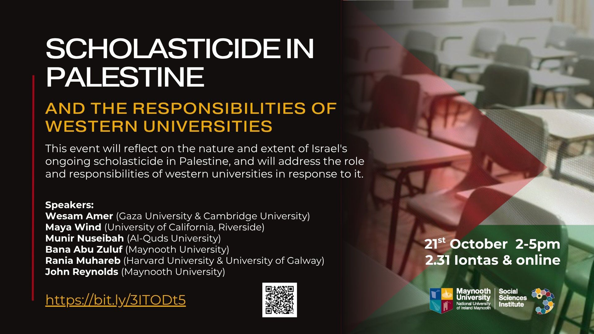
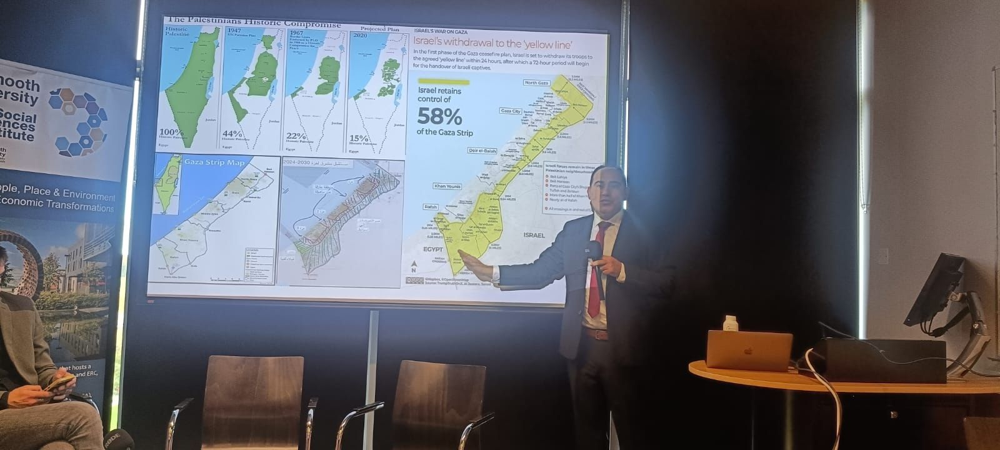

Invited Talks
Maynooth University Event Examines Scholasticide and the Responsibilities of Western Universities
Dr. Wesam Amer participated in a major public lecture and panel discussion at Maynooth University, where he examined the epistemic erasure of Palestinian universities and the broader phenomenon of scholasticide. Drawing on his experience as a Palestinian academic, he contributed to a critical discussion on academic freedom, institutional responsibility, and international solidarity with higher education in Palestine.
Leading academics and researchers gathered at Maynooth University in Ireland for a public event titled"Scholasticide in Palestine and the Responsibilities of Western Universities," examining the destruction of educational institutions in Palestine and the role of international higher education institutions in responding to these challenges. The event formed part of Maynooth Research Week 2025 and brought together scholars from Ireland, Palestine, the United Kingdom, and the United States.
Among the featured speakers was Dr. Wesam Amer, of Gaza University and the University of Cambridge, who contributed insights on the impact of conflict on higher education, knowledge production, and intellectual life in Palestine. His participation focused on what participants described as the epistemic erasure of Palestinian universities and the broader implications of attacks on educational systems.
The discussion explored the concept of scholasticide, a term used to describe the systematic destruction of educational institutions, scholars, students, and knowledge infrastructures. Participants examined how the loss of universities, libraries, and research institutions affects not only access to education but also the preservation of collective knowledge and cultural memory.
Dr. Amer engaged with students, lecturers, and researchers attending the event, contributing to discussions on the responsibilities of universities beyond their traditional educational functions. The event considered how Western universities can support academic continuity, scholarly exchange, and institutional partnerships with Palestinian higher education institutions.
The seminar featured a distinguished international panel including Maya Wind, Munir Nuseibah, Bana Abu Zuluf, Rania Muhareb, and John Reynolds, reflecting a growing global interest in questions of academic freedom, educational justice, and university responsibility.
The event concluded with calls for stronger academic solidarity and sustained support for Palestinian higher education, reinforcing the role of universities as custodians of knowledge, critical inquiry, and international cooperation.
Maynooth University Law → Maynooth University news → Maynooth University Social Sciences Institute → LinkedIn post →


